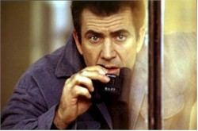
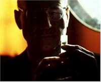
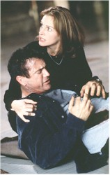

Maybe you've seen the two completely different television teasers for the new romantic thriller Conspiracy Theory, the first featuring a wistful Julia Roberts ("There's something about Jerry...") set against the Frankie Valli chestnut "Can't Take My Eyes Off of You" and the second punching up the action elements of the film but pausing long enough to take one of Mel Gibson's more sinister lines entirely out of context ("I just love her so bad") and give the impression that his hapless cabdriver is a gentle sad sack who somehow saves Roberts' Justice Department attorney Alice Sutton from bomb-throwing bad guys.
These two spots speak eloquently to what's wrong with the movie, which is, at the end of the day, a noble but hopelessly muddled effort by veteran director Richard Donner (the Lethal Weapon franchise) to go against the grain of prevailing action film wisdom. And at fifteen minutes over two hours, Conspiracy Theory is proof that too much of two of Hollywood's biggest stars can be way too much of a good thing.

Gibson stars as Jerry Fletcher, a motormouthed New York cabbie who sees black helicopters and elaborate global schemes wherever he looks (NASA's plotting to kill the president by having the shuttle trigger an earthquake! The Grateful Dead tour constantly because they're British agents! All assassins have three names!). He's got a creepy, initially inexplicable crush on Roberts' Sutton, who humors him but is clearly becoming both spooked and exasperated by his paranoid histrionics. When he's not driving and preaching the gospel of sinister collusion Jerry's at his tiny and comically reinforced apartment publishing the eponymous newsletter, which has a circulation list of five. "I don't know what I know, but I know that it's big," he says, in echoing a sentiment that could pass for this lumbering movie's motto.
But things escalate when the eccentric but oddly likable Jerry is suddenly kidnapped by a bunch of Fed-looking guys in a polished black suburban assault vehicle and whisked to a deserted warehouse where he's tortured by the sinister Dr. Jonas (Patrick Stewart) in a style very much akin to Malcolm McDowell's Ludovico Treatment in A Clockwork Orange. Nearly biting off Jonas' nose, Jerry engineers a bold and very funny escape. This sets the stage for the remainder of the movie, in which Jonas, now looking very much like Jack Nicholson in Chinatown, pursues Jerry as he tries to regain his memory and convince Alice that his rantings are based on a simple truth.As the movie slowly reveals the honestly surprising link between Jerry and Alice, it grows increasingly flabby and preposterous in its pace and plotting. Donner's obviously trying to turn the conventions of the genre upside down, and there are genuine laughs when two potential car chases fizzle out before they've even begun. In fact, the film's tone is so consistent that you've got to hand it to everyone concerned for their well-intentioned effort.
Carter Burwell's sassy score is easily the film's most consistently fresh pleasure. He's the guy who did the bluegrass yodel version of "Ode to Joy" for the Coen brothers' Raising Arizona, and his music for Conspiracy Theory is one part Touch of Evil, one part Peter Gunn and always there to tweak the proceedings in an ironic direction. And for those in the know, one of the biggest hoots in the film involves Jerry ducking into downtown Los Angeles' Orpheum movie palace to hide out in a packed screening of – Richard Donner's 1985 chainmail opera Ladyhawke. As a wistful meditation on the faded glory of the repertory era it's spot on, but as a tribute to himself the sequence is the funniest thing in the movie.

The stars breeze through the proceedings in acceptable fashion, with Gibson repping a big-screen version of the persona he projects in interviews (irreverent, quick-witted, mischievous) and Roberts looking once again like she lucked into a high-profile role but doesn't quite know what to do with it. Like Robert Redford before her, Roberts isn't very good at selecting projects that show her off to her best ability, a theory reinforced by the unexpected success of My Best Friend's Wedding. And Gibson's recent boast to Vanity Fair writer Cathy Horyn that he didn't prepare for the torture scenes ("I don't think about it at all"), while offset by his regular guy opinion that stardom "is lucrative, that's why you can't complain," comes close to confirming a suspicion that the part of Jerry – filmed back-to-back with Ransom – is as much like the actor as we're likely to see. As regards the chemistry generated by the much-anticipated meeting of these two superstars, well, the whole, alas, is far less than the sum of its parts. The supporting cast is about as unmemorable as we've come to expect when the stars are making all the money, with Stewart appropriately threatening in what look like Wally Cox's glasses and Cylk Cozart providing some much-needed focus as straight-arrow Agent Lowry.Having said all this, look for the film to command it's opening weekend box office and develop into one of the late summer's few big hits. Why? Pretty Woman meets the Lethal Weaponfranchise, for one, plus the fact that the early August opening appears to be a direct result of backing off a head-to-head battle with Air Force One. As in nature, the multiplex world abhors a vacuum: something's got to be a hit in the dog days, and in this summer of Hollywood's apprehensive discontent (lots of tepid blockbusters out there), Conspiracy Theory has conspired to become a winner if not by quality alone, then by default.